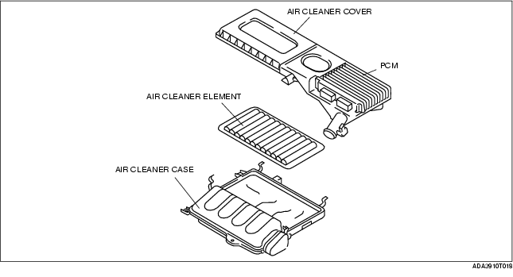

Air cleaner construction [ZY]
Structure
• The air cleaner is composed of the air cleaner case, air cleaner cover and air cleaner element.
Air cleaner element
• Non-woven fabric (dry type) has been adopted.
Air cleaner structure
• The air cleaner structure curbs intake air resistance for increased torque at all engine speeds.
Air cleaner cover
• The PCM with the PCM case has been integrated. With the integration of the PCM in the air cleaner, the PCM is forced cooled by the intake air. (See PCM CONSTRUCTION/OPERATION [ZY].)
